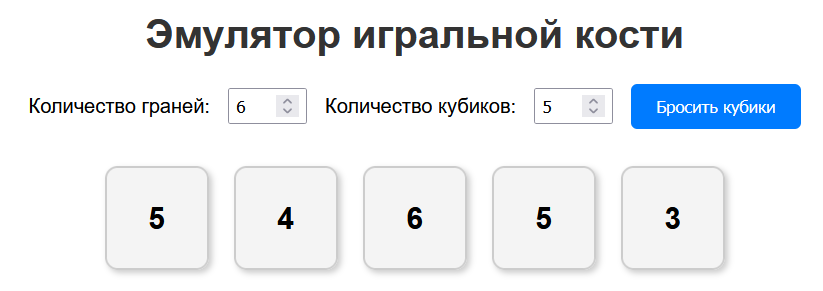

Задание: Эмуляция игральной кости
Создайте сайт с эмуляцией игральной кости, где можно настроить количество граней и количество кубиков.
Требования:
-
Добавьте два поля ввода:
- Первое поле для выбора количества граней на кубике (минимум 2 грани).
- Второе поле для выбора количества кубиков (минимум 1 кубик).
-
Добавьте кнопку "Бросить кубики". При нажатии на кнопку должны генерироваться случайные числа для каждого кубика.
-
Результаты бросков отобразите на странице в виде блоков с числами.
-
Оформите сайт с помощью CSS (цвета, шрифты, отступы). Каждый результат броска должен быть стилизован как отдельный блок (например, с границами и тенью).
Дополнительные задачи:
- Добавьте анимацию при броске (например, числа меняются перед тем, как остановиться на финальном результате).
- Сохраняйте историю бросков и отображайте её в отдельном блоке на странице.
- Замените числа графическими символами (например, точками, как на реальных кубиках).
- Добавьте звуковые эффекты при броске кубиков.
Пример:
